SaaS
Apps
Portais
Produtos que se encaixam, num só fluxo

Automações
· relacionamento com quem compra de você
DEMO
MÓDULO
Automações
Fluxos visuais · menu que espera a resposta · histórico de execuções
Blocos
Gatilho
Menu de opções
Condição
Agente responde
Enviar mensagem
Chamar sistema
Nota interna
Atribuir
Etiquetar
Encerrar
Gatilho
mensagem chegou
WhatsApp · site
Menu de opções
“Como posso ajudar?”
Orçamento
Suporte
Orçamento
Suporte
Condição
a resposta contém
“orçamento”
sim
não
Agente de IA
agente de vendas
Encerrar
“Até breve!”
Etiquetar
a pessoa: suporte
Atribuir
Suporte · rodízio
esperando a resposta…
Quero fazer um orçamento
Meu pedido não chegou
a IA entendeu: Orçamento
a IA entendeu: Suporte
Te mando os valores já!
conversa encerrada
etiqueta: suporte
Bruno assume
Execuções
Ana · DEMO · WhatsApp
concluída
Mensagem chegouok
Menu de opçõesesperou a resposta
Condiçãosim
Agente respondeok
Encerrarok
Caio · DEMO · chat do site
com a equipe
Mensagem chegouok
Menu de opçõesesperou a resposta
Condiçãonão
Etiquetarsuporte
AtribuirBruno assumiu
Você desenha o caminho da conversa em blocos
O menu espera a pessoa responder
A condição escolhe o caminho certo
No outro caminho, etiqueta e passa para a equipe
Cada execução deixa o rastro, passo a passo
Cada conversa segue
o caminho que você desenhou.
Exemplo ilustrativo · DEMO